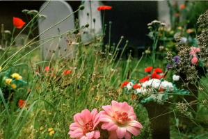
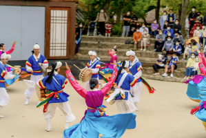
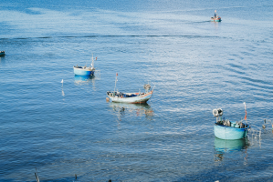
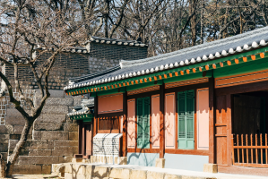

청산도 일상풍습
청산도에는이미 세상에서 사라져버린 것들이 고스란이 남아 있습니다.
빠르게 변하는 세상속에서 아무곳에서나 볼 수 없는 귀한 보물이 천년의 가치를 두고 이곳에 있습니다.
-

청산도 장례문화 꽃 상여
꽃 상여의 하얀천이 자기 명에 가면 처지고 자기 명에 못가면 하늘로 뜬다는 설이 있습니다.
-

도락리 정월 굿
정월굿은 마을의 잡귀를 쫓고 풍년과 풍어를 기원하며주민의 무사안일을 염원하는 굿입니다.
-

도락리 갯영 공표
갯바탕을 적절한 날 하룻동안 개방구역을 정하여 주민 모두가 골고루 취하는 마을 규칙입니다.
-

청산도 설 풍습
음력 섣달 그믐날 초저녁에 각 가정에서 차례상을 차리고 제사를 모십니다.
청산도 관광명소
靑山八景(청산팔경)은 기정란 정지회(旗亭蘭 亭之會)란 연락계원(청산유림)들이 白蓮寺(절)에 모여서
청산도의 여덟군데 아름다운 경치좋은 곳을 골라 시를 읊으며 지은데서 유래한다.
-
3경 대봉연사
大鳳蓮寺는 주변풍경, 건물의 웅장함보다 소리의
깨우침이 강하게 느껴진다 -
국화리단풍길
大鳳蓮寺는 주변풍경, 건물의 웅장함보다 소리의 깨우침이 강하게 느껴진다
-
진산리해수욕장
大鳳蓮寺는 주변풍경, 건물의 웅장함보다 소리의 깨우침이 강하게 느껴진다
-
어촌체험마을
大鳳蓮寺는 주변풍경, 건물의 웅장함보다 소리의 깨우침이 강하게 느껴진다
청산도는
쉼이다
SLOW CITY
슬로(SLOW)는 지난 세월에
대하여 조용히 되돌아보는
시간을 갖자는 것입니다.